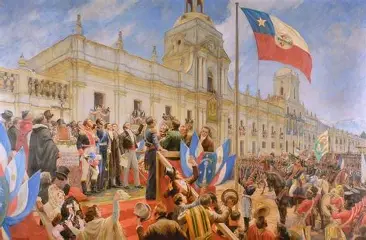
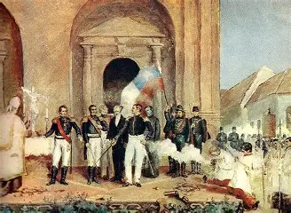
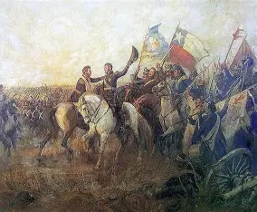

Bienvenido a esta presentación sobre los hitos más importantes de la historia de Chile. A continuación, exploraremos tres momentos clave que marcaron el nacimiento de la nación chilena.

Tras años de conflicto y debates políticos, la independencia de Chile fue proclamada oficialmente el 12 de febrero de 1818. Este proceso fue liderado por figuras como Bernardo O'Higgins, quien asumió un rol fundamental en la dirección política y militar de la naciente república. La ceremonia de proclamación y jura de la independencia marcó un antes y un después en la historia nacional.

El 12 de febrero de 1818, en Talca, se firmó el Acta de Independencia de Chile. Este documento formalizó la ruptura definitiva con la Corona Española. La firma contó con la participación de destacados patriotas y representó la consolidación del ideal independentista que había comenzado a gestarse en 1810 con la Primera Junta Nacional de Gobierno.

El 5 de abril de 1818, se libró la Batalla de Maipú, un enfrentamiento decisivo en el que las fuerzas patriotas, comandadas por José de San Martín y Bernardo O'Higgins, derrotaron al ejército realista. Esta victoria militar aseguró la independencia de Chile y puso fin a los intentos de reconquista por parte de España, consolidando el proceso emancipador.